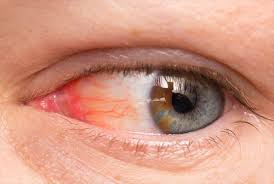

LGBTQIA+ Physical Health
Looking for a health care provider is never easy, but for lesbian, gay, bisexual, transgender and queer/questioning (LGBTQ) individuals, the search is especially challenging. Faced with inadequate — and sometimes hostile — care, many LGBTQ patients are understandably reluctant to share their sexual orientation and gender identity. We all rely on healthcare services at some point in our lives, and many of us take them for granted. But not everybody has the same access to medical advice and treatment. As a result, specific populations suffer poorer health outcomes than others. Health disparities are how disease, injury, and violence affect marginalized communities differently than others. Health disparities typically result from a lack of access to adequate healthcare. In 2016, the National Institute on Minority Health and Health Disparities identified the LGBTQ+ community as a health disparity population. The LGBTQ+ community encompasses all races, ethnicities, religions, and social classes. And when an LGBTQ+ person belongs to another marginalized group—such as a person of color—it becomes even more challenging to find accessible, equitable care.
The Center for American Progress reported that when people experience discrimination, they are more likely to avoid healthcare providers. Whether you or a loved one has experienced discrimination in a healthcare setting or not, your fear is valid, Stephen Abbott, MD, an infectious disease specialist at Whitman-Walker Health, told Health. "My advice is to seek out LGBTQ+ health resources and directories," said Dr. Abbott. "GLMA: Health Professionals Advancing LGBTQ+ Equality [previously known as the Gay & Lesbian Medical Association] maintains an LGBTQ+ inclusive provider directory." You can also search for organizations that advocate for and provide direct health services to LGBTQ+ populations in your state. Some examples include the Health Equity Alliance in Maine and the University of California San Francisco Center for LGBT Health & Equity.
Check out our website for easy breakdown of LGBTQIA+ health breakdown